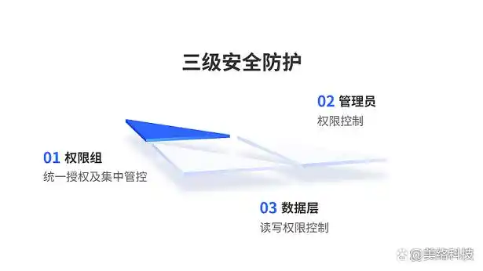

撬动万亿市场！央国企信创快速落地刻不容缓
近期，美国芯片法案、EDA出口管控等打压举措频出，对我国信息技术的自主可控问题再次敲响警钟。国产替代和自主可控紧迫性空前提升，党政信创、行业信创建设迎来全面加速。
信创，作为我国自主可控的重要战略，一直以来都是国家重点关注的对象。自2019年我国提出发展信创产业以来，相关支持政策就相继出台。
2020年8月，国务院印发《新时期促进集成电路产业和软件产业高质量发展的若干政策》，提出加快国内技术产业建设，推动国产替代进程。
2021年9月，《关键信息基础设施安全保护条例》正式生效，明确将公共通信和信息服务、能源、交通、水利、金融、公共服务、电子政务、国防科技工业等重要行业界定为关键信息基础设施落地领域。
2021年12月，国家发改委印发《“十四五”推进国家政务信息化规划》，明确提到2025年国家电子政务网基本实现政务信息化的安全可靠应用，意味着党政信创从电子公文系统跨越至电子政务系统建设。
2022年1月，国务院印发《“十四五”数字经济发展规划》，提出要补齐技术短板，集中突破高端芯片、操作系统、工业软件等领域，明确“强化关键产品自给保障能力”。
相关数据显示，2021年我国信创产业规模为6886.3亿元。业界普遍认为，未来5年将是“大信创”发展的关键时期，重点行业领域将进入国产化部署的深化拓展阶段。
迈好第一步，平稳过渡到信创状态，意义重大。在重要行业和关键领域中占据重要分量的央国企，应如何在信创替代中补短板？
一、聚焦“着眼点”：信创产业链
贸易争端表明，IT供应链稳定直接影响下游各行业的稳定与发展，关乎整个社会的经济稳定发展。
信创产业，即信息技术应用创新产业，是我国IT产业发展升级的长期计划。信创，就是要在核心芯片、基础硬件、操作系统、中间件等领域实现国产化，旨在做到“自主可控、安全可靠”。
作为一个万亿级别的市场，信创拥有庞大的产业链，包含了从IT底层的基础软硬件到上层应用软件的全产业链的安全可控，主要分为4类：
（1）基础硬件：芯片、服务器、存储、交换机、路由器、各种云等。
（2）基础软件：操作系统、数据库、中间件等。
（3）应用软件：OA、ERP、办公软件、政务应用、流版签软件等。
（4）信息安全：边界安全产品、终端安全产品等。
当下，央国企应以什么为抓手全力推进信创替代工作？一个着眼点——信创产业链。重点在于补短板。
补短板。重塑IT架构，实现IT架构国产化，扭转依赖非国产IT产品的被动局面。具体到信息技术在企业管理中的应用，就是要逐步建立自主的IT底层架构和标准，从基础硬件、基础软件到行业应用软件逐步实现国产化，比如有序推进国产正版软件的使用，提升数据安全保障能力，实现自主可控，保障信息安全。
面对复杂多变的国际形势，企业只有进行信创替代、使用自主技术，确保IT供应链的稳定，才能打通供给约束堵点，从根本上解决“卡脖子”难题，使发展不再受制于人。
二、辨明趋势：信创替代迎来历史性机遇
在政策与资本市场的大力支持下，信创产业得到了蓬勃发展，中国信息技术也走上崛起之路，逐步缩小与国际间的差距。在厂商的不断研发创新和市场的反复验证下，信创产品从无到有，从“可用”到“好用”。
从过去三年的信创产业发展来看，我国信创产业基本达到可用的阶段，国产IT基础设施和软硬件已进行大量的适配工作。信创建设先从是党政进行试点，推行党政信创解决方案，随后在“八大关键行业”（金融、电信、石油、电力、交通、航空航天、教育、医疗等）中陆续布局，并有望加速向全领域渗透。
信创行业长期向好，为企业信创替代提供了利好条件。那么，央国企如何将信创替代落到实处？
综合办公系统作为使用面最广的产品，可以简单理解为OA，具备向其它系统延伸的基础，因此理所当然可以成为优先改造的对象。OA先替换，逐步带动其它系统实现国产化，无疑是从点到面的突破。
面向社会对于信息技术的可控性、安全性及稳定性日益增长的需求，央国企应如何快速、深入地推进行业信创深度应用？
三、找准模式：信创平台 + 多元应用
美络科技围绕数字化转型和数字信创的建设思路，推出基于信创体系的一体化解决方案，为企业重塑IT底层架构，以自主研发的低代码统一应用开发平台为技术底座，采用微服务技术框架，提供“平台+应用+生态”的全新模式，围绕企业在“文事会、人财物”方面的业务需求，提供多层级多维度、“PC + 移动”一体化的业务应用，如电子公文、综合办公、会议管理、组织管理、移动办公等通用应用，以及财务审签费控、合同管理、法务管理等企业经营管理应用，方便央国企进行集中管控、分级管理。
基于信创体系的低代码统一应用开发平台，大幅降低了应用开发的难度。企业借助平台上的各类场景应用模块和行业插件，通过“拖、拉、拽”的方式，快速搭建业务架构，实现快速开发、快速交付、快速上线，敏捷响应信创战略和业务创新需求。同时，平台采用高性能架构，具有良好的可扩展性，支持大数据、多用户、高并发业务，用户可以根据市场变化灵活扩展业务需求和应用功能。
信创替代是对已有建设成果的革新。企业在推进信创建设的过程中，可能会面临一定的技术难题，诸如国产环境下A版式文件与B电子印章能否兼容、应用软件迁移到国产化平台上能否稳定运行等等，这些问题都需要一定的时间来解决。
为避免以上问题的发生，美络科技与龙芯、飞腾、兆芯等国产CPU；与中标麒麟、银河麒麟、鸿蒙、统信UOS等国产操作系统；与长城、同方、曙光等国产整机；与达梦、人大金仓、恒辉、瀚高、神州通用等国产数据库；与金蝶天燕、东方通、中创等国产中间件；与永中Office、金山WPS等国产流式文件；与数科OFD、书生、福昕等国产版式文件；与安证通、卫士通、金格、方正、吉大正元等国产电子印章，完成产品间的兼容互认，帮助用户提前完成信创底层兼容和复杂技术路线的整合工作，实现从硬件到软件的运行维护、升级完善的全程可控。
该解决方案提供中央集群和分布式互联等部署方式。不管是大型央国企，还是单独一个部门，都能轻松、高效转型。
在安全保障方面，方案满足涉密信息系统分级保护的安全要求，以“基于权限组的统一授权及集中管控 + 基于管理员的权限控制 + 基于数据层的读写权限控制”的三级安全防护服务，为用户构建完整的安全防护保障体系，确保网络安全、系统安全、应用安全和数据安全。

四、围绕一个方向：信创是央国企信息化建设的必然选择
二十大报告指出，“加快实施创新驱动发展战略。以国家战略需求为导向，集聚力量进行原创性引领性科技攻关，坚决打赢关键核心技术攻坚战。”可见，科技创新直接关系到国家安全，发展信创就是为了解决本质上的安全问题。
从党政信创到金融信创，再到行业信创，时至今日，信创已从“党政切入、替代试点”的起步期，全面转向市场驱动的行业推广阶段。而央国企作为国民经济的重要支柱，其信息化建设必然要确保网络安全和信息安全，因此被列为国产化部署的先头部队，并理所当然地在政策、财政和市场方面获得有力支持。
同时，央国企全面落实信创替代，还能通过构建国产化信息技术软硬件底层架构体系等，带动信息行业发展、突破关键技术“卡脖子”难关，从而保障软硬件供应链的安全。
而且，部分央国企在数字化转型过程中，已将信创项目开展列为工作重点，一方面构建信创技术架构，另一方面将现有的业务系统陆续迁移到信创环境，在信创替代和数字化转型上“齐头并进”，取得了阶段性成果。
美络科技承建的多个信创项目中，类似的成功案例就有“华能集团国产化OA系统建设项目”“国家电投集团综合办公系统建设项目”。央国企信创落地的成功案例，必然会成为行业信创的风向标和助推器。
央企信创建设成功案例分享
成功案例一
为推进某集团全系统国产化治理体系，美络科技在国产化OA系统建设项目中，构建统一开发平台，打造集中部署、分级应用的全集团统一办公应用，实现了国产化OA系统采用全国产化的软硬件环境建设，包括服务器、操作系统、数据库、中间件、浏览器等，实现了整体架构的自主可控和信息数据的安全可靠。
成功案例二
在某公司的信创OA系统项目中，美络科技遵循“管控 + ERP”信息系统建设规划原则，构建自有一体化应用平台，与国产化软硬件深度融合，提供满足集团日常办公的整体解决方案以及项目实施和运维服务，确保IT架构、业务应用的安全与稳定，加快推动落实集团管理制度，进一步提高了集团管理水平和工作效率。
从政策导向到市场需求驱动，从党政试点到行业推广，企业信创布局已然箭在弦上。未来，美络科技将继续坚持自主创新，打造技术优势，聚焦企业的信创需求，为各行各业提供更加自主可控、安全可靠的解决方案，助力企业信创建设，赢得稳定发展主动权。